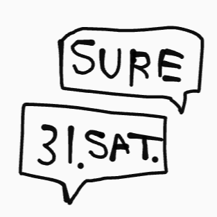
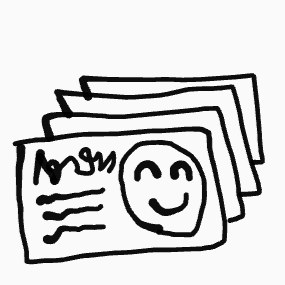
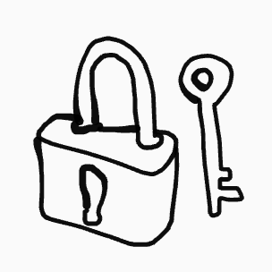
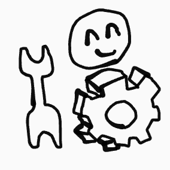

大学生による大学生限定の合コンマッチングアプリ, Unigokon-ユニゴ
彼女彼氏ができないのは"シャイだから"? ,"そもそも異性と交流の機会が無い"?
それは間違いです。大学での出会いは自分で広げるもの。そのためにユニゴは革命的ソリューションをもたらします。
大学に入った瞬間に異性と隔離された理系男子大学生さん、看護,教育,福祉系女子大学生のみなさん、あなたたちを"合コン×IT"で結びつけることを使命として、ユニゴは爆誕（爆発的に誕生）しました。
さあ、あなたも来たるべき大学合コン革命のビッグウェーブに乗り遅れないようにしましょう！
"大学生のため"のUniGokonの強み
合コンに特化した機能の充実

無料でグループメッセージやスケジュール機能の充実
万全のユーザー確認

学生証を用いてユーザーが本人であることを安全に確認
万全のセキュリティ

SSL認証をはじめとするセキュリティ技術を利用
自由自在な交流の幅の設定

自分の大学内や他大学などに設定可能
*β版では大阪府立大学内でのみユーザーを設定可能です
さあ、はじめてみよう！!!!!!
はじめる
ログイン
従来のマッチングアプリの問題点
・課金制度が大きなハードル
・1対1で会うのが怖い
・誰でも登録できるためユーザーが信頼できない
・婚活を目的とするユーザーが多い
→合コンのような複数人での男女のカジュアルな交流が難しい
これらの問題点をUniGokonは打破！
UniGokonはβ版を提供開始！
*UniGokonでは現在β版としてサービスを大阪府立大学の大学生に限定しています。
*本サービスは大阪府立大学と直接関係していません。お問い合わせは我々学生本サービスに直接お願いいたします。
*本サービスの対象となる大学生とは、学部,修士,博士過程に在籍して各大学から学生証を正式に得ており、かつ、大学が在籍を認めている者のことを指します。
*科目履修生をはじめとするその他の形態の学生は対象ではありません。
お問い合わせ
©2019 UniGokon. All rights reserved.